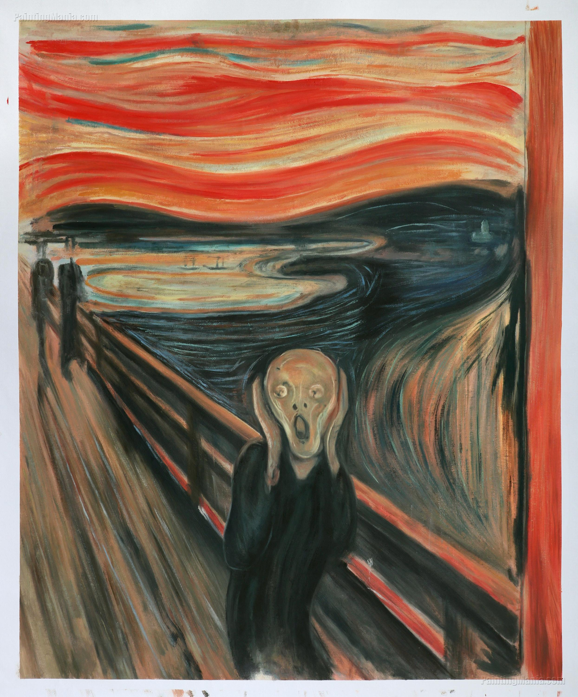

Thông tin tác phẩm
- Họa sĩ Edvard Munch
- Hoàn thành 1893
- Trường phái Biểu hiện (Expressionism)
- Chất liệu Sơn dầu, pastel và tempera
- Quốc gia Na Uy

“Một tiếng thét vô hình vang vọng
giữa nỗi cô độc và bất an của con người.”
Trong “The Scream”,
Edvard Munch đặt nhân vật chính
giữa cây cầu dài và bầu trời đỏ rực,
với gương mặt méo mó,
đôi tay ôm lấy đầu
như đang cố chống lại
một cơn hoảng loạn vô hình.
Những đường nét xoáy mạnh trên bầu trời,
mặt nước và không gian xung quanh
khiến toàn bộ khung cảnh
như đang rung chuyển theo cảm xúc bên trong nhân vật.
Không còn ranh giới rõ ràng
giữa thế giới thực và tâm trạng con người,
tất cả hòa vào nhau
thành một cảm giác lo âu dữ dội.
Hình ảnh ấy không chỉ minh họa
cho nỗi sợ hãi cá nhân,
mà còn trở thành biểu tượng
cho sự cô độc và khủng hoảng tinh thần
của con người hiện đại.